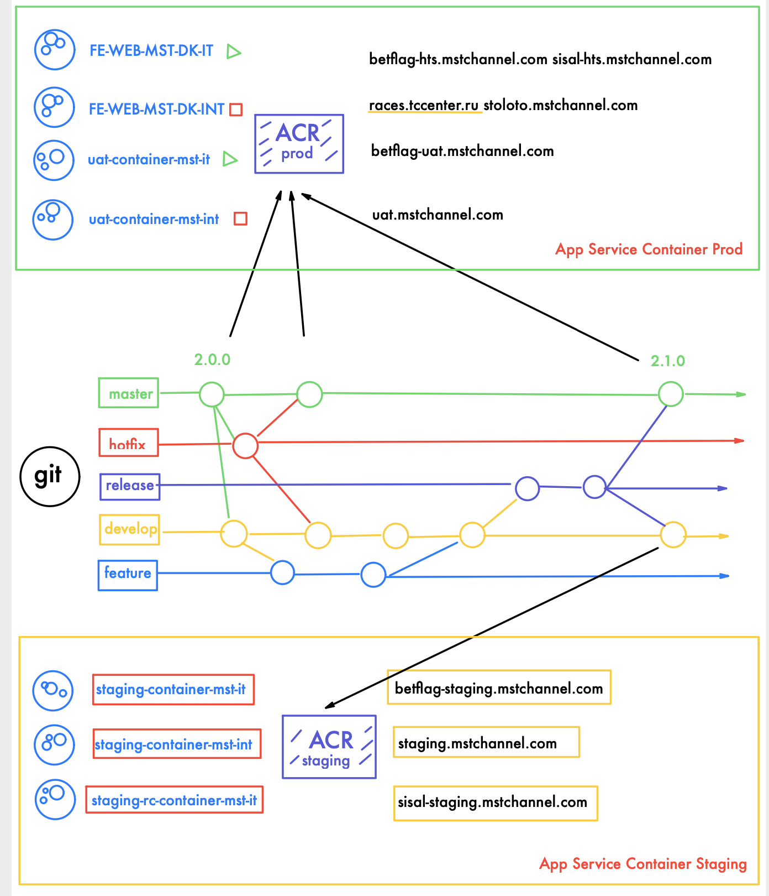

Angular MST Ippica Front-end
Per il progetto front-end dell' ippica web è stato scelto di adottare un'architettura a container collegata, nel versionamento, al repositori git. Per quanto riguarda staging ad ogni push sul ramo develop viene pubblicato nell'azure container registry di staging un'immagine del container con il tag "latest". Per quanto riguarda l'ambiente di produzione, ad ogni tag sul ramo master viene pubblicata un'immagine del containter nell'azure container registry di produzione, con lo stesso tag presente sul repository git. Tutti gli steps sopra descritti sono stati automatizzati tramite l'uso delle pipeline di azure devops, fatta eccezione del passaggio di pubblicazione dal container registry all'app service di produzione. In quel caso è necessario accedere all'app service, selezionare la versione da pubblicare tramite la dropdown presente nella voce container setting e salvare. Nel tempo sono stati aggiunti altri due ambienti, uno di UAT (collegato a produzione) e uno staging-rc che contiente le modifiche pronte ad essere testate dai vari concessionari. Questi due ambienti non hanno un automatismo per la creazioni e pubblicazione delle immagini, quindi sarà necessario eseguire i seguenti comandi dopo aver scaricato ed installato l'azure cli
Effettuare il login
az acr login --name IppicaACR
Creare un'immagine container e taggarla
docker build -t ippicaacr.azurecr.io/fe-web-mst-dk-it:v1.7.8-rc.1 -f Dockerfile.prod .
Pubblicare l'immagine nell'acr
docker push ippicaacr.azurecr.io/fe-web-mst-dk-it:v1.7.8-rc.1
come ultimo step è necessario selezionare tra i container setting dell'appservice la versione desiderata e salvare
Di seguito lo schema dell'architettura
